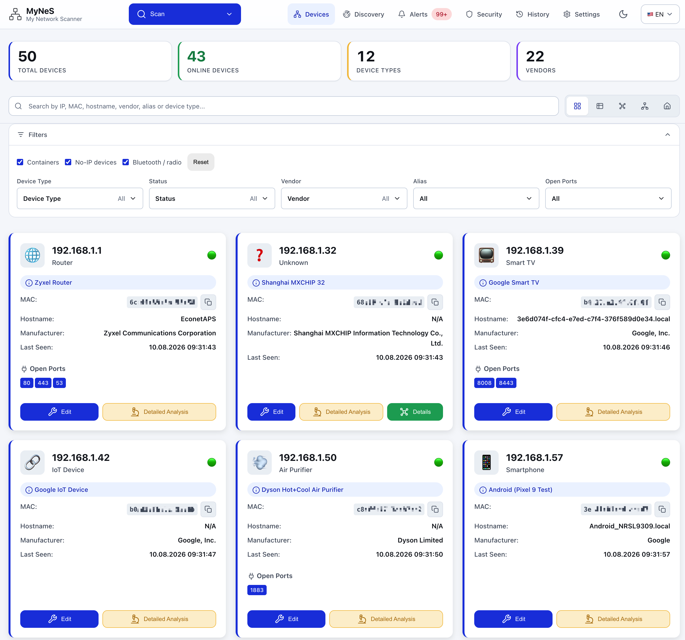

My Network Scanner (MyNeS)
Your family's user-friendly network scanner
A self-hosted, open-source application that scans every device on your local network — routers, laptops, phones, IP cameras, consoles, smart-home appliances — and lets you manage them from a modern, user-friendly web interface. Advanced scanning, AI-powered device identification, and security analysis included.

Features
Web-based interface
A modern, responsive, user-friendly web UI for managing your network.
Automatic network discovery
Determines your local network range automatically.
ARP scanning
Uses the ARP protocol for fast device discovery.
Advanced port scanning
Comprehensive service detection across 1000+ ports.
Device type detection
Automatically detects routers, computers, phones, cameras and more.
Docker integration
Detects running containers and virtual network interfaces.
Multi-protocol analysis
SSH, FTP, HTTP and SNMP support for deeper detection.
Device management
Edit device info, add custom attributes and manual ports.
AI-powered identification
"Identify with AI" via Anthropic, OpenAI or OpenRouter (optional, bring your own key).
OUI / vendor database
IEEE OUI database with 37,000+ vendor records and online API fallback.
Multi-language
Turkish and English language support.
PWA
Installable to the home screen, light/dark theme, 320px up to a TV.
Multi-protocol discovery
An IP scan misses half a home network. MyNeS listens to everything that announces itself: mDNS/Bonjour (printers, NAS, Chromecast, HomeKit), Matter, SSDP/UPnP (routers, smart TVs, cameras, consoles), Bluetooth LE (devices with no IP at all) and Zigbee/Z-Wave over MQTT.

Five views
The device list can be read five ways, switched from the toolbar.
| View | What it is for |
|---|---|
| Cards / Table | Detail and bulk editing |
| Graph | The whole network at a glance; subnet gateways as hubs |
| Topology | What is plugged into what: Internet → router → switch/AP → group → device |
| Home plan | Drag devices onto a plan of your home |


Monitoring, alerts and notifications
Scans on a schedule, diffs consecutive scans and reports what matters: new device, device offline, IP change, MAC change (ARP spoofing), newly opened port, under-voltage, low battery, high latency, weak signal. Delivery via MyNeS's own Web Push, a Home Assistant notify service, ntfy, Telegram, webhook, Slack, Discord and email.

Security & vulnerability analysis
The Security page shows the whole fleet's attack surface and known-CVE exposure, worst first (curated offline match, not a live feed): a weighted fleet risk score, severity distribution, a "what to fix first" list and per-device detail. Credentials are stored with Fernet symmetric encryption and sanitized on export.

Integrations & REST API
Settings → Integrations offers InfluxDB 2 (Grafana push), Prometheus (Grafana scrape) and the app's full REST API catalog, read live and downloadable as OpenAPI (swagger.json). Home Assistant integration works via MQTT Discovery (push) and REST/WebSocket (pull).

On a phone
MyNeS is a PWA: installable to the home screen, follows the OS light/dark preference, and lays out from a 320px phone up to a TV.


Quick start — Docker
The image is published for linux/amd64 and linux/arm64, so it
runs on a Raspberry Pi or Orange Pi as-is.
Docker Compose (recommended)
services:
mynes:
image: fxerkan/my_network_scanner:latest
container_name: mynes
# Host networking is what lets it actually see the LAN.
network_mode: host
cap_add:
- NET_ADMIN
- NET_RAW
volumes:
- ./data:/app/data
- ./config:/app/config
environment:
MYNES_PORT: 5883
MYNES_PASSWORD: ""
restart: unless-stoppeddocker compose up -dDocker Run
docker run -d \
--name mynes \
--network host \
--cap-add=NET_ADMIN \
--cap-add=NET_RAW \
-v "$(pwd)/data:/app/data" \
-v "$(pwd)/config:/app/config" \
-e MYNES_PORT=5883 \
--restart unless-stopped \
fxerkan/my_network_scanner:latest
Web UI: http://<your-server-ip>:5883. Host networking and NET_RAW /
NET_ADMIN are required because MyNeS sends raw ARP frames and listens for mDNS/SSDP
multicast. It does not run as root and is not privileged. Only scan networks you own.
From source
git clone https://github.com/fxerkan/my_network_scanner.git
cd my_network_scanner
python scripts/run.py
Requires Python 3.9+ and Nmap. scripts/run.py creates the virtual
environment, installs dependencies, checks for nmap and starts the app.